3D Modeling & Rendering (in progress)
3D Modeling
There are several techniques of creating a virtual representation of 3D models. The surface of an object can be approximated by a graph structure which is called mesh. An advantage of meshes is that the creator can decide how complex the geometry of an object may become. Based on this, the performance of the final application can be optimised by reducing the mesh complexity on unimportant objects. However, a disadvantage is that it is not possible to create perfectly rounded surfaces. The smoother a curvature should be, the more refined the mesh needs to be. This will affect the application’s performance. Alternatively, 3D models can be created using Computer-Aided Design (CAD). The strength of CAD is that is works with exact mathematical definitions of shapes. This leads to perfectly curved surfaces which are for instance required when designing a car. Both meshes and CAD focus on the outside hull of an object and disregard its interior. This is addressed in the volumetric representation of objects. It stores density values in a three-dimensional grid which provides information about the shape of the object as well as its inside. Volumetric representations are often used in medicine in order to get a meaningful visualization a patient’s body.
Meshes
A mesh is an undirected graph which approximates the surface of an object. It consists of individual vertices which are situated at defined points in 3D. The vertices can be connected with an edge between them. Vertices and edges form faces which are visible as a surface in a rendered image.
Modeling Techniques
Mesh-based 3D models can be created using a number of techniques. It is also possible to combine these techniques in one workflow.
Compositing Primitives
A beginner-friendly way of manual modeling is to approximate objects by a composition of primitive shapes like cubes or spheres. Such basic shapes are usually included in 3D programs by default and can directly be added to a scene. The primitives are moved, rotated, scaled and stretched in order so that they fit the target object as good as possible. For instance, a table can be approximated by creating five cubes. One of them is compressed along the vertical axis and represents the tabletop. The other four cubes are streched into thin and long cuboids and are aligned with the corners of the tabletop. They act as the legs of the table.
This technique only requires transformations, rotations and scaling operations and therefore, objects can be created without much effort. Thus, results can be achieved quickly. However, the basic shapes can only approximate the object. Intricate shapes and especially organic forms cannot be modeled with this technique. Primitives are best used to prototype a scene (missing reference), e.g. to block out the general shapes of objects and to establish its proportions. Additionally, primitives can also be used as a starting point, e.g. for subsequent manual modeling or sculpting processes.
Boolean Operations
One can also use Boolean operations in order to create complex 3D shapes from multiple base meshes. Boolean operations are heavily used in CAD where they are defined on volumes. The volumes are combined using operations known from Boolean algebra, e.g. OR, AND or XOR.
Intuitively, the for every point in space and every base volume, a truth value is determined (Foley, 2010). It states if the point is part of the volume. By combining the truth values for this point using a Boolean operator, one can determine if the point is part of the resulting volume. For instance, the union operation combines the points of the base volumes using the OR-operator. Therefore, a point is part of the resulting volume if it is part of any of the starting volumes. For the AND-operator, a point is only part of the resulting volume if it is part of all base volumes. This corresponds to the intersection of the objects. The substraction operation can be achieved by the NOT operator. Here, the result volume consists of all points which are part of the first volume but are not inside the other volumes. The substraction is not symmetric, i.e. it yields different results with different volume orders.
Boolean operations also work on meshes. Here, the volume is regarded which are encapsulated by a mesh. The expected result is a mesh which encapsulates the resulting volume. To achieve this, special algorithms are used to clip the individual meshes, e.g. the Greiner-Hormann clipping algorithm (Greiner & Hormann, 1998) or the Vatti clipping algorithm (Vatti, 1992). The trimmed meshes are combined into one resulting mesh.
Digital Sculpting
Digital sculpting is inspired by real clay sculpting. Similar to real sculpting, the 3D artist starts with a base shape and can pull and dent the virtal material to create bumps and creases. Usually, the large shapes are defined first and then progress is made on smaller details. These operations are performed in a 3D sculpting program using a mouse or a tracked stylus (Simonds, 2013). A difference to real sculpting is that is is possible to dynamically add or remove volume at any point which enables the sculptor to extend the object in any way. During the process, the sculpted mass is automatically defined by a mesh which is managed and optimised by the sculpting program.
With digital scupting the 3D artist can focus on forming the shape of the object without worrying about the underlying mesh geometry. Like manual modeling, it is possible to create real and imaginative objects. However, just like real sculpting, training is required in order to achieve results with high quality. Digital scuplting is well suited for creating organic shapes, e.g. for designing characters. Sometimes, it is also used in a creative way to prototype the shapes of an object with hard edges.
Sketch-Based Modeling
3D Scanning
Photogrammetry
It is also possible to use structure-from-motion photogrammetry to create 3D models (Westoby et al., 2012). Photogrammetry is also a 3D scanning technique but it only requires a standard camera. With this camera, a series of photos is taken from various different angles and positions. Alternatively, it is also common to use an array of cameras which are all triggered at the same time to take a photo. The photos are later processed in photogrammetry software in order to generate the 3D model. The software looks for common feature points in the images and tries to match them. Because of the fact that the images have been taken at different positions, the feature point is shifted in the other image and so the software can determine the depth of the feature point. This is similar to the way how humans can perceive depth from parallax motion, e.g. when looking out of the window of a moving train. Objects which are close to the viewer like signal installations at the rails will quickly move through the field of view while distant trees seem to travel through the field of view at a slower speed.
Photogrammetry is capable of producing realistic results since it does not only provide geometry information but can also project the original images onto the 3D model in order to create a texture. Among other areas of application it is used in aerial photography and archaeology.
3D models from photogrammetry can be created with the commercial software products Agisoft Metashape, RealityCapture, Autodesk ReCap and the open-source tool Meshroom.
Manual Mesh Creation
The previous methods all work on an object-level where the modeler is only concerned with the shape of the object while the computer constructs the according mesh data. However, it is also possible to manually construct the mesh. This means that the 3D artist adds and manipulates individual vertices and defines edges and faces in order to build the final mesh. One can either start from scratch or adapt existing primitive shapes. An example would be the (artistic) modeling process of a car. (In the production process, cars are usually modeled with CAD shapes since they can define exact and smooth curvatures. However, for real-time applications like games, cars are modeled as mesh-based objects). In this example, a 3D artist could start with reference images of the real car which are placed on the top view, front view and side view. After that, vertices are placed one by one in such a way that they align with all three background images. When placing the vertices, they are connected to edges and also form faces. Here, the 3D artist needs to make sure that the edges and face strips follow the major forms of the car’s body. Additionally, the topology of the mesh needs to be managed, e.g. to avoid a mesh that is too dense. 3D programs offer different features to support the modeling process. Especially a series of generative modifiers like live-mirroring for symmetric shapes or automatically subdividing edges to add more vertices accelerate the process and improve the result (missing reference). Creating realistic 3D object using this technique requires training and in-depth knowledge of the supporting features. A wide range of tutorials exist online which teach how to create different objects and explain different tricks which can be used to maximize the effectiveness of the modeling program’s features.
With mesh creation, the creator has full control over the mesh’s complexity and topology. This is helpful for optimizations, e.g. if the model should be used in real-time rendering. Additionally, a clean topology helps in managing the amount of detail which is portrayed in the mesh. It it also helpful for animatable objects since the topology can be laid out in a way that it supports the movements. The main disadvantage of this technique is that it is a tedious and slow process. Similar to drawing, the quality of the result depends on the artistic skills of the creator. Apart from defining the shape of the object, the modeler also has to think about a suitable topology to repesent the shape as a mesh. The technique works well for man-made objects since they consist of clear shapes and hard edges which are good reference points in the modeling process. Creating organic objects by hand this way is tricky.
Box Modeling
Box modelling describes a method in which faces of a polygon cube are extruded and manipulated to create a complex model. The process generally utilises a simple iterative method where extruded faces are moved, scaled and rotated to represent an object. The name box modelling refers to the use of a cube as a starting point and often has a very angular result. Final stages of the project may work with smoothing functions to provide a more organic look, however during development it is optimal to retain a low polygon count.
Retopology
The presented modeling techniques of digital sculpting, 3D scanning and photogrammetry typically result in a high-density triangle mesh. The problem with this mesh is that it is irregular and often bears unnecessary complexity (missing reference). For instance, a 3D scanned table consists of many small triangles but its table top could be simplified to one cuboid shape which only consists of two triangles per side. Additionally, it is not possible to animate the high-complexity 3D meshes since any movement results in condensed geometry and stretched surfaces. In real-time rendering, the amount of polygons also has an impact on the runtime of the rendering pipeline. This means that high-density meshes will take longer to render and therefore the framerate will be lower. Due to this, complex meshes should be retopologised (Pan et al., 2018). In this technique, the high-density mesh resulting from the sculpting process or 3D scan is used as a base mesh. After that, a new mesh is created on top of this base mesh. This can be done manually or by an algorithm. The new mesh is typically created using quads and it considers the shape of the object and how it might be animated. As a main idea, the quads form strips which should follow the object’s main curves and which should align to any hard edges (missing reference). Since the manual creation of such a retopology mesh is tedious and time consuming, there are algorithms which automate this process (Pan et al., 2018). The result of the retopology is a mesh which describes almost the same shape as the original high-density mesh but it is more lightweight and optimised. However, the retopology process may lose some details which were captured by the high vertex-density of the original mesh. To solve this, the difference between the two meshes can be “baked” into a displacement or normal texture. This way, small details can be captured in the texture and are shown by the shader. Details on this displacement and normal maps are described in the “Textures” section.
b: Cutout of (a) showing the geometry.
c: Manually retopologised mesh using quads.
d: Cutout of (c) showing the geometry. A selection of important face loops is highlighted in green.
Subdivision Surface Modeling
A technique which is used for creating smooth, organic surfaces is called Subdivision Surface Modeling (DeRose et al., 1998). The modeler constructs a guide mesh. After that, an algorithm constructs a smooth version of the modeled shape. It achieves this by subdividing the faces of the guide mesh and by calculating the vertex positions of the resulting mesh with regard to the vertex positions of the guide mesh. There are different algorithms which differ concerning the position calculation rules. Once the algorithm has been applied, the resulting mesh can act as a new guide mesh for the next iteration of the algorithm. Thus, the geometry can be smoothed further by applying the subdivision surface algorithm recursively. However, this also yields a mesh with more vertices (Catmull & Clark, 1978).
Textures
Textures are images which are applied to the 3D object’s faces, e.g. to give colour to the surface. More details about textures are described in the chapter about Computer Graphics.
UV-Unwrapping
Since image textures are two-dimensional data, a mapping is needed from the 3D room with the object to the 2D space with the texture. It defines which texture pixel, also called “texel”, is displayed on the mesh’s face. The process of creating this mapping is called UV-unwrapping. Intuitively, the mesh is cut open at some edges so that its 3D shape can be unfolded into a flat form. The image texture is applied to this flat representation.
More technical, each vertex of the mesh is mapped to a 2D vertex in the space of the texture and with new connectivity data. The 2D texture space is also called UV-space, the two axes are labelled with U and V instead of X and Y. This distinguishes the UV-coordinates which are associated with a texture with points in the 3D room. UV-coordinates range from 0 to 1 with the point (0,0) at the left bottom of the image and (1,1) at the top right. This also means that UV-points are independent of the texture resolution and are scaled with the image. When UV-unwrapping an object, its faces are laid out on the texture. Good UV-unwrappings minimise the amount of stretching. Stretching occurs if the shape of a face is distorted in the UV-space. Especially curved surfaces like a sphere are difficult to UV-unwrapping without stretched textures.
To minimize the stretched textures, edges of the mesh can be marked as seams. This means that the faces which are not connected in the texture space. Subsequently, a vertex in the 3D space can be mapped to multiple vertices in the UV-space if the adjacent edges are seams. The problem of seams is that they create discontinuities in the texture on the faces. For instance, if a brick wall texture is applied to a cube, it can happen that the “lines” of brickwork do not match up at the seams. Hence, a 3D artist has to do manual corrections by moving the unwrapped face on the texture until the seams match. For this reason, seams are often placed in areas which are less visible to the virtual camera.
Texture Resources
There are various online repositories which offer photo textures for varying purposes and with different qualities, prices and licenses. A large amount of these online resources offers PBR-compatible textures which means that it does not only provide image textures but also other data like normal maps, metallic maps, roughness/smoothness maps and ambient occlusion maps.
Here is a list of such texture repositories:
| Name | Web address | Price | License | PBR | Number of textures |
|---|---|---|---|---|---|
| CC0 Textures | https://cc0textures.com/ | Free | CC0 | yes | > 700 |
| Poliigon | https://www.poliigon.com/ | Annual or monthly subscription ($12 - $47 per month) | Based on the subscription plan | yes | > 3100 |
| Texture Haven | https://texturehaven.com/textures/ | Free | CC0 | yes | > 140 |
| textures.com | https://www.textures.com/ | Per texture (low resolutions are free; requires registration) | Per texture | mostly | > 7500 |
Apart from downloading online resources, it is also possible to create textures from photos, procedural logic, photoscans and by hand-painting them.
Texture Painting
Textures can be created in photo editing and drawing applications such as Adobe Photoshop or GIMP. However, it is difficult to paint details on the texture which should appear at a certain position on the model because the UV-layout needs to be considered. Therefore, 3D programs provide a texture painting mode which allows the user to directly paint on the 3D model. Pen strokes are transferred onto the underlying image texture with respect to the UV-layout. Apart from manually painting the colour, one can also use a clone tool to blend different photorealistic textures into each other. This way, small details can be set up quickly and obvious tiling patterns can be hidden. For instance, a mud material can be set up separately of a water material. After that, the two materials can be blended together by hand-painting a mask which defines puddles on a muddy ground.
Another technique is projection painting. A 2D texture is shown as a semi-transparent overlay on the screen. Behind the texture, the 3D object can be seen. When painting, the texture is projected onto the 3D object based on the current viewpoint.
The following table contains a list of tools which can be used for texture painting:
| Name | Web address | Price |
|---|---|---|
| 3D Coat | https://3dcoat.com/ | $99 - $568 |
| Armorpaint | https://armorpaint.org/ | 16 Euro, optional subscription to support developers (Open-Source) |
| Blender | https://www.blender.org/ | Free (Open-Source) |
| Substance Painter | https://www.substance3d.com/products/substance-painter/ | Monthly Subscription ($19.90 - $99.90) |
Exercise: Texture Painting in Blender
The goal of this exercise is to create a dice. To achieve this, you will texture paint the sides of a cube so that they show the according number of eyes.
-
Blender’s startup scene already contains a cube which will act as the mesh for the dice. If you already deleted the cube or changed the startup file, you can create a new cube by pressing
Shift + Aand selecting Mesh > Cube. In Blender 2.8, the primitive mesh types are already UV-unwrapped. Hence, we do not need to worry about UV-unwrapping. -
At the top of the window, a series of tabs can be found. They act as pre-defined workspace configurations for common tasks in the 3D modeling programme. Select the tab which says “Texture Paint”. In the figure it is highlighted by
a. The workspace changes to a two-split view. On the left side, an image editor can be found. On the right side, the 3D view is situated. Switching the tab did not only alter the alignment of the panels in Blender. It also switched from Object Mode, where users can examine 3D models without editing them, to Paint Mode. This can be seen in highlightbof the figure. In paint mode, we can draw on the 3D model. However, at the moment this is not possible. You might have noticed that the cube turned purple. A solid purple colour is an indication for a shader error. In this case, we are missing a texture. Since we can only paint on textures, we need to add one to the cube. 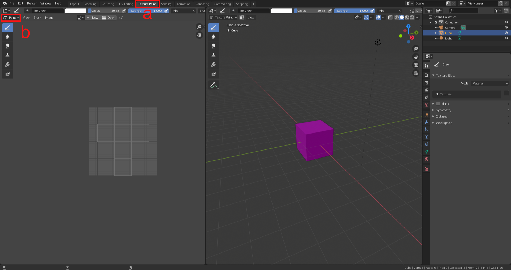 - We will now add a texture to the cube.
- The controls for this operation are situated on the right in the inspector.
Make sure that the sub-tab with the screwdriver and wrench icon is selected.
It is highlighted as item
ain the following figure. This panel shows options for the current tool and workspace settings. In this case, it provides options for texture painting since this mode is active. In the section texture slots, click on the small plus next to no textures. The button is labelled asbin the figure. - This will open a menu where you can decide which texture slot should be populated with a texture.
Each texture slot has a different purpose.
More information on different texture types can be found in the chapter Computer Graphics.
For now, we want to create a texture that determines the visible surface colour of the object.
Hence, select the option Base Color.
It is marked with
cin the figure. 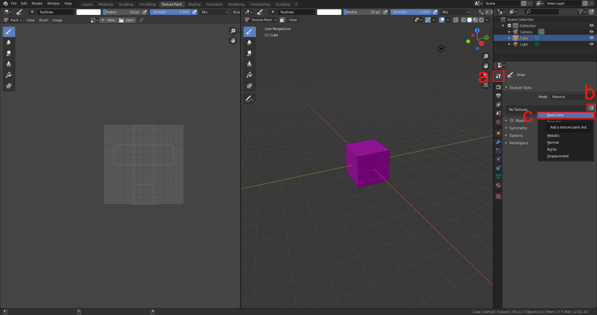
- The controls for this operation are situated on the right in the inspector.
Make sure that the sub-tab with the screwdriver and wrench icon is selected.
It is highlighted as item
-
Another menu will open up where you can specify a name, width, height and colour. According to these properties the texture will be created. For the name, it is a good idea to assign a meaningful name and also indicate that this is a texture for the colour. You can for instance name the texture dice_colour. Textures should usually be quadratic and have a width and height which is a power of two, e.g. 2, 4, 8, 16, 32, 64, 128, 256, 512, 1024 or 2048 pixels. The bigger the texture, the sharper the texture will look. However, larger textures also use more memory. 1024 pixels are a good standard value. The texture will be initialized with the given colour. You can leave it at the default 80% white. One can also state whether or not the texture should have an alpha cannel. In this example, we do not need it since the dice does not have transparent parts. The Generated Type dropdown box should be set to Blank. This will create a texture with a uniform colour. The other options of this dropdown-menu create pre-defined textures for testing purposes which show different kinds of grids. Leave the 32-bit Float checkbox deselected. If it is checked, the texture has a higher bit depth and therefore higher accuracy for the values. But this is not needed here. Finally, hit OK. 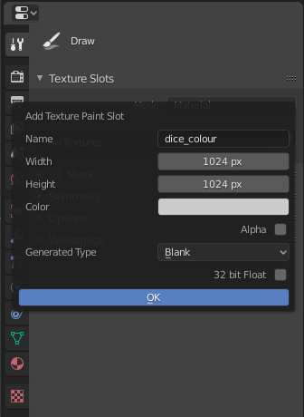
-
The cube should now have the white/gray colour which was set in the texture generation menu. If you hover your mouse over the 3D view, a white circle surrounds the mouse cursor. This circle indicates the size of the brush. If you click and drag on the surface of the cube, you can draw white strokes. Create a one or two test strokes to get a feeling for the mechanic. 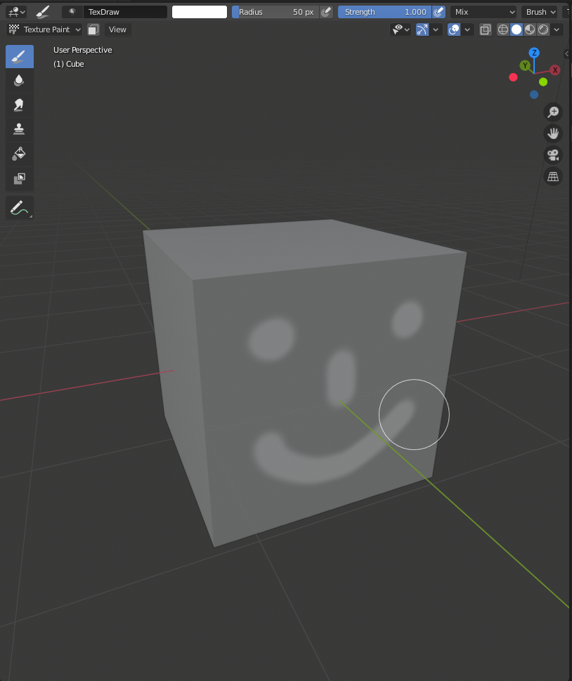 Note that the brush stroke is projected from the current viewing position. Therefore, painting a surface at a very steep viewing angle will distort the stroke. 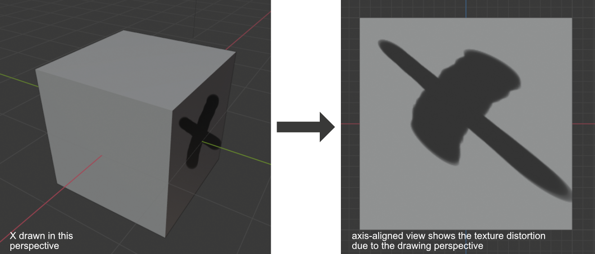
-
Undo any test strokes you just did with
Ctrl + Z. We would like to add black eyes to the dice. Thus, we need to change the colour of the brush. This setting can be altered in the inspector on the right side. There is a colour wheel in the brush section under Color Picker. Hue and saturation can be defined on the wheel itself as seen in the figure. The value of the colour can be set with the slider next to the colour wheel. Pull the slider down to the black end of the slider. You can now paint black brush strokes.
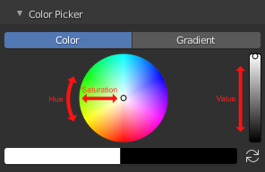 -
Align your camera with the front of the dice. You can do this by hovering over the 3D view with the mouse and pressing
NumPad 1. The brush circle gives a preview of the position and size of an dice eye. You can change the brush size by shortly pressingFand moving the mouse. To confirm the new brush size, left click. -
Draw one test eye by positioning the cursor over the cube’s surface and left click once. This creates a filled black circle. However, we now see that the drawn circle does not yet look like the eye of a dice. It has a smooth falloff which means that the corners of the circle are blurred and fuzzy. To change this, expand the Falloff section in the inspector. It contains a graph with a smooth curve. The curve defines the drawing intensity of the brush stroke at different positions on the brush. The left side of the graph defines the strength near the middle of the brush’s circle. On the right side of the graph, the strength at the rim of the brush circle is controlled. Underneath the graph, there is a series of preset buttons showing some curve shapes. You can experiment with some of them and see how the drawing pattern changes accordingly. It is also possible to manipulate the curve in the graph directly by its handling points. Since we want a circle with a well-defined rim, we can either take preset with the constant value (the last one on the right) or the circular shape (second one on the left). The constant value gives a sharper rim but it also shows stepping artifacts since no blending is performed. The circular shape produces a relatively sharp rim but also blends the pixels at the borders to avoid stepping artifacts.
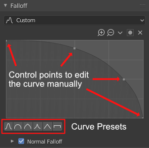 - Now that the brush is correctly set up, you can paint the eyes of the dice.
You can change between different axis-aligned views with the numpad keys:
Numpad 1: Front ViewNumpad 3: Right Side ViewNumpad 7: Top ViewCtrl + 1, 3 or 7gives the opposing side, i.e. Back View, Left Side View and Bottom View It is best to avoid zooming in or out while painting and to avoid altering the brush’s scale so that all eyes have the same size. An alternative way of painting is presented in the section “*Further things to try out”. 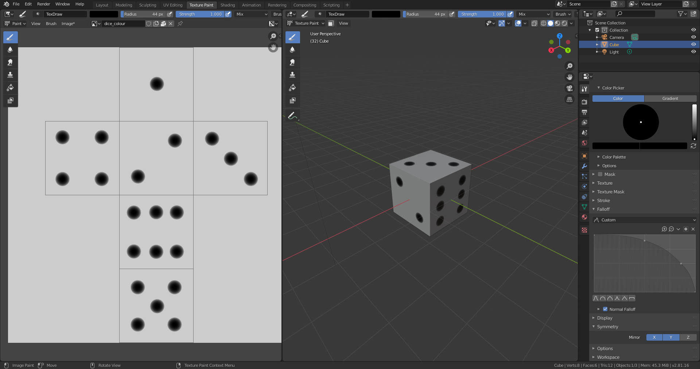
-
It is important to know that the painted texture is not yet saved. By default, it is not included in the .blend-file and so saving the project will now save the texture. Instead, textures need to be saved separately as an image file to persist. This can be done in the Image Editor panel on the left side of the two-split view. First, we need to load the texture that was just created. At the top, there are two buttons New and Open. Click on the small dropdown field next to the New button which shows a triangle, a rectangle and a small circle. This dropdown menu shows all textures which are referenced in the .blend-file. Select the dice_colour texture that you created. The editor will now show the image and an overlay of the UV-unwrapped cube. Next, go to the top menu of the Image Editor and select Image > Save as…. Save the image somewhere on your harddrive, ideally in the same folder as the .blend-file. 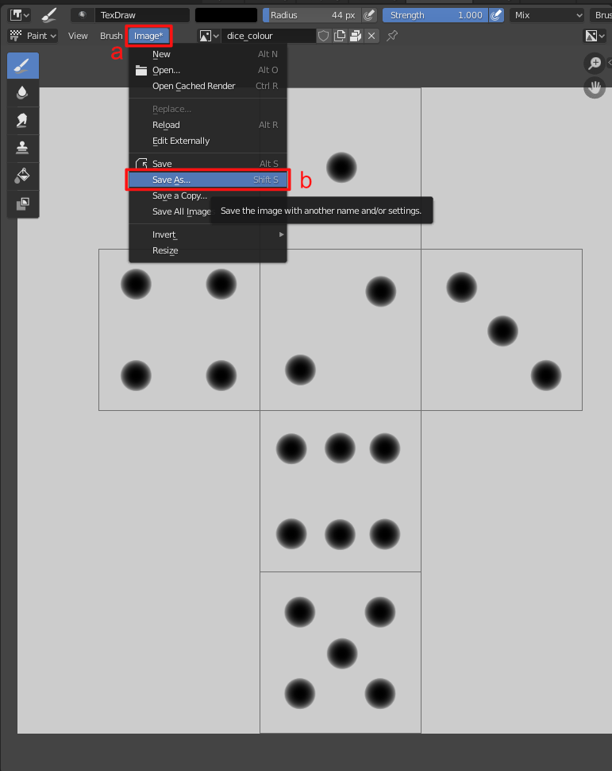
- Any changes to the texture need to be saved manually.
If you alter the texture, go to Image > Save or hover the mouse over the Image Editor and hit
Alt + Sto save the currently displayed texture.
Futher things to try out
- You can also paint the eyes in the Image Editor. In the top-left corner of the Image Editor, change the dropdown menu which says View to Paint. You now have the same drawing abilities in the 2D texture view. If you paint either in the texture view or on the 3D model, the other view will update in realtime. 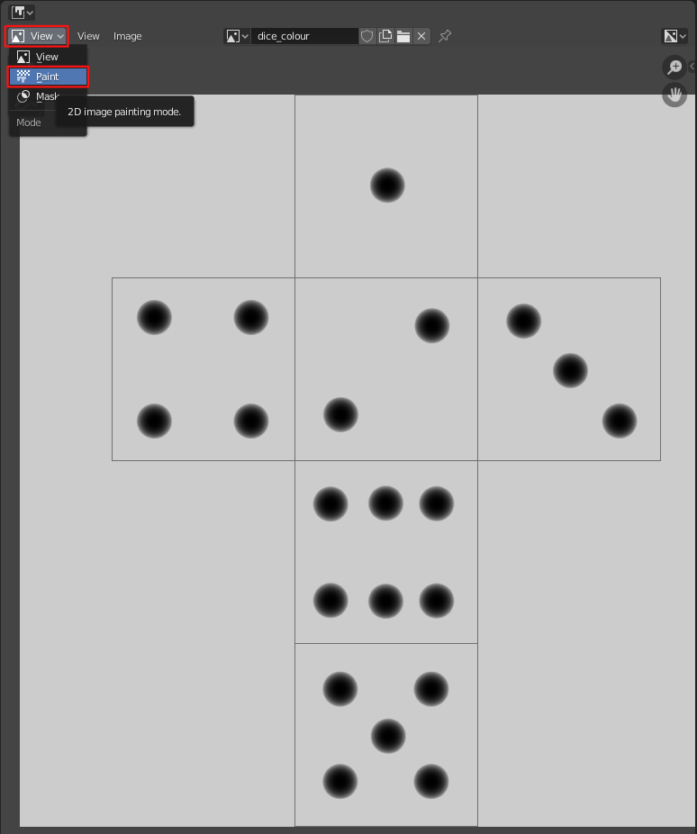
- On the left side, there is a menu which shows different brushes.
If the menu is not visible, press
Tto toggle its visibility. The menu contains some brushes known from image editing software, e.g. a smear tool, a clone brush and a fill bucket. 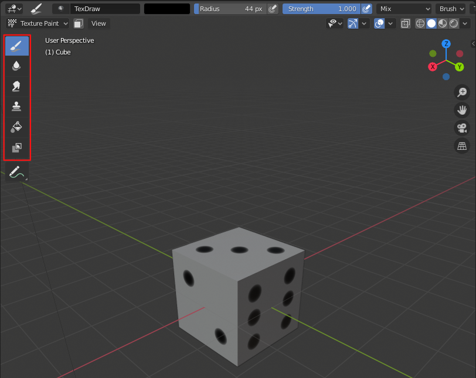 - In the inspector, there is a symmetry section which allows you to automatically mirror brush strokes when painting them.
- You can re-use the colour map as a depth map to carve the eyes out. Alternatively, you can create a second map for the depth and draw surface dents there.
Texture Baking
Textures can also be baked by 3D programs. In this process, information are calculated and stored in a texture. This technique can be used to improve the performance of a real-time applications if the lighting situation never changes. The 3D program can pre-calculate the lighting situation once and write the results for each object into textures. After that, the textures are applied to the 3D objects. The scene does not require any light sources anymore since all information about shadows and surface brightnesses are already included in the textures on the objects. Since the baking algorithm can use a raytracing renderer, the baked results can be more realistic than the real-time version. Real-time render engines only use approximations of light effects, e.g. to calculate shading and shadows. In comparison to this, raytracing algorithms simulate individual rays of lights with their reflections and refractions to obtain realistic lighting information. For instance, indirect lighting by light which was reflected by other surfaces can be calculated in an accurate manner with a raytracing engine. Another example are caustics which are produced by transparent objects, e.g. lenses which focus light on one point.
Texture baking is also used to create normal maps. In this workflow, a 3D artist creates a high-resolution model, e.g. by sculpting it. After that, it is retopologized to a low-resolution model which is suitable for real-time rendering. In the reptopogy step, a lot of fine details are lost. They can be recovered by baking the normals of the high-resolution mesh onto the low-resolution mesh.
Exercise: Texture Baking in Blender
Baking Lighting Information
- Create an interesting scene in Blender with some basic objects.
To add objects to the scene, press
Shift + Aand add meshes such as a cube, sphere or monkey. Create a ground by adding a plane. To arrange objects, press theGkey and then move the mouse. The movement operation can be confirmed by left-clicking and canceled by right-clicking. - Select the sphere and monkey objects by left clicking on them (you can also select multiple objects by holding down
Shiftwhile left clicking). After that perform a right-click and select Shade Smooth which gets rid of their facetted look. With the monkey selected, pressCtrl + 2to add a subdivision surface modified of level 2 to the monkey. 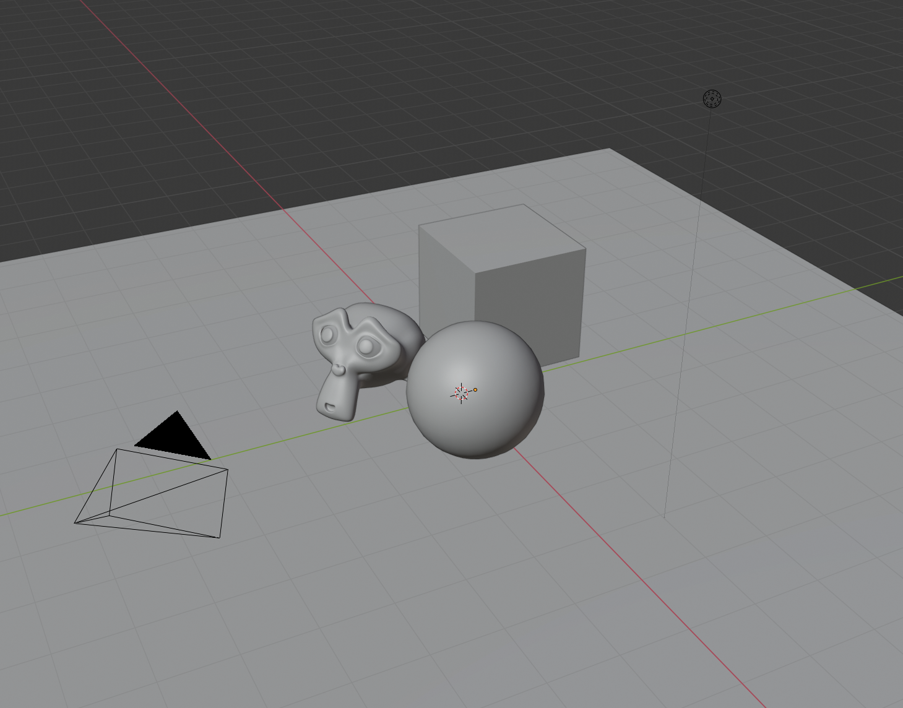 - Switch the render engine from Eevee to Cycles in the toolbar. Eevee does not produce accurate results since it is optimized for real-time performance with simplifications in the shading process. Cycles is an unbiased raytracing engine which produces physically accurate results with regard to reflections and indirect light bounces. 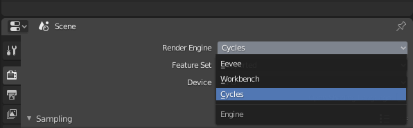
- The lighting should also be adapted so that we get interesting illuminations and shadows.
Add an area light and place it so that the monkey and sphere cast shadows onto the cube object.
You can also place a point lamp on the opposite side of the objects.
An interesting effect can be achieved by tinting the color of the lights so that they are not completely white anymore.
A live-preview of the lighting situation can be seen by pressing
Zand selecting Rendered. In this preview mode, all viewport operations such as moving the view, moving objects or changing the light color and intensity are still possible. - Add materials to the objects and give them some distinct colors. The materials can be set in the inspector on the right on the small tab with the red and black ball icon (not the globe icon). Add a new material slot and change the color in the field which is labeld Base Color. You can also give an object a glass material to create intricate caustics on the floor. To change the material type to glass, select the dropdown menu which is labeled Surface and is currently set to Principled BSDF. Then select the Glass BSDF option. 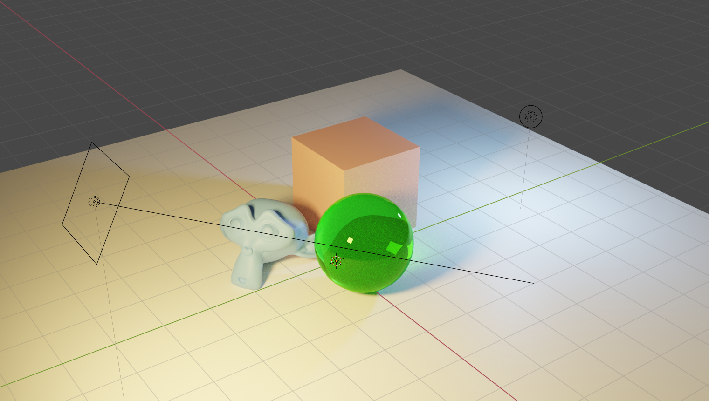
- As the final step of the scene setup, make sure that all 3D objects in the scene are UV unwrapped.
In Blender 2.8 the primitive objects should be unwrapped automatically.
Select an object and go to the UV Editing tab and check if geometry appears on the left in the UV editor.
To switch between objects, exit the edit mode by hitting
Taband select the next object. After that, enter the edit mode again by pressingTabagain. - We can now proceed to the baking preparations. Each object needs a texture to which the baked data can be written. In this case, we will use separate textures but it is also possible to combine multilple objects in one texture if their UV-layouts are non-overlapping. Go to the UV Editing tab again. In the UV editor on the left, select the menu entry Image > New to create a new texture. Give it a descriptive name, e.g. cube_bake and select a high resolution, e.g. 1024px x 1024px or 2024px x 2024px. The color and type do not matter since we will overwrite the texture anyway.
- Repeat the previous step for each object in the scene which should be baked. A created texture is not connected to any object so you can create all textures with one object selected. There is no need to select the object to which the texture should be applied first. Remember to add a texture for the ground plane since this will likely be the most interesting bake.
- The next step is to connect each of the textures with the target object.
This is done in the shader editor.
Go to the Shading tab.
Select the object which should be connected to a texture so that its material nodes are revealed in the bottom panel.
With the mouse hovering over this material node panel, press
Shift + Ato show the menu for new nodes. Select Texture > Image Texture to add an image texture node. - Do not connect the image texture node to anything, otherwise there will be recursive issues in the baking process where Blender tries to evaluate the texture for the material and writes on it at the same time. Instead, go to the small dropdown on the Image Texture node next to the ”+ New” button and select the texture that you just created for the object. Repeat this step for every object. 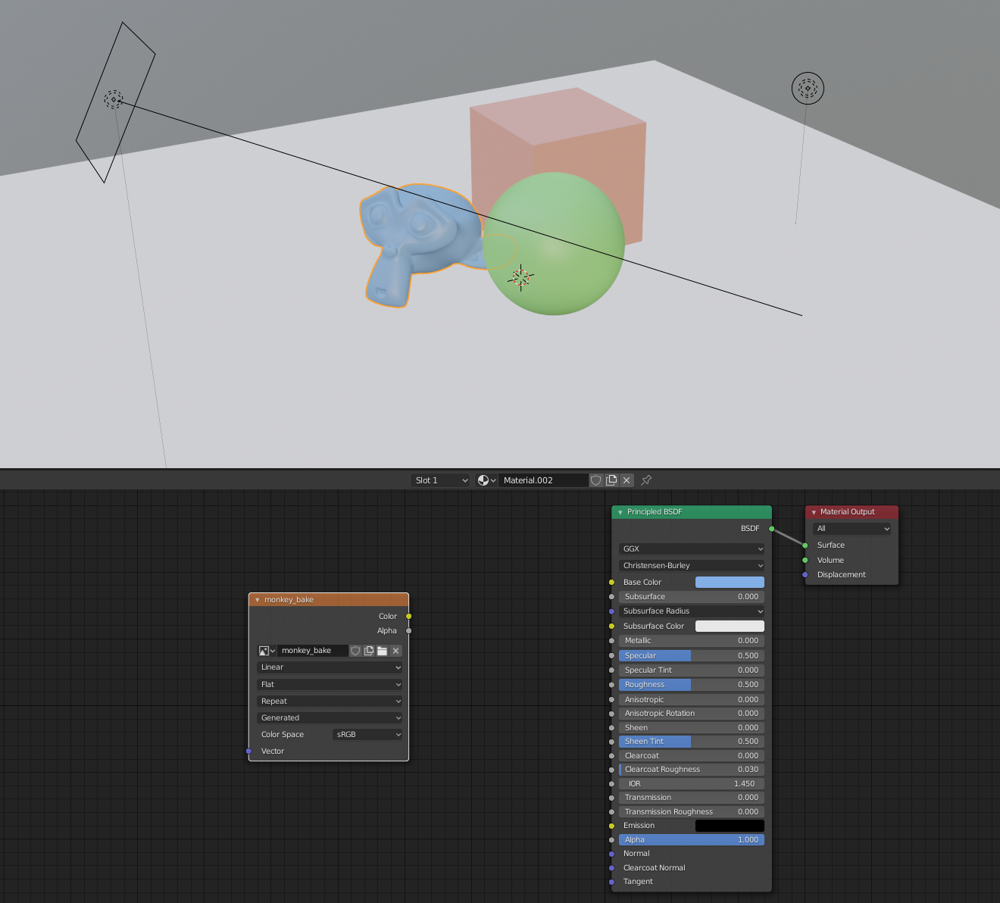
- Click on the tab with the camera icon in the inspector on the right to open the render settings. We need to set the quality settings for the bake to avoid a grainy bake. Exand the first section which is called “Sampling”. It determines how many rays the render engine casts into the scene. This value also applies to baking processes. In general, higher values mean that the result will be less grainy since the brightness values of more rays can be averaged. The downside is that the additional rays need to be calculated which increases bake times. For the given example, a value of 1024 works well.
- We are now ready to bake. Select the object which should be baked. The baking process will write on the image texture which is selected in the node setup. Hence, make sure that the image node with the created texture is actually selected. Expand the third-to-last section in the inspector. It is called “Bake”. Make sure that the bake type is set to Combined and that everything is checked underneath Influence. Click the button “Bake”. The baking process will take a bit of time. The progress can be seen at the bottom of the panels in a small progress bar. Once the baking process has finished, the result can be inspected in the Image Editor. 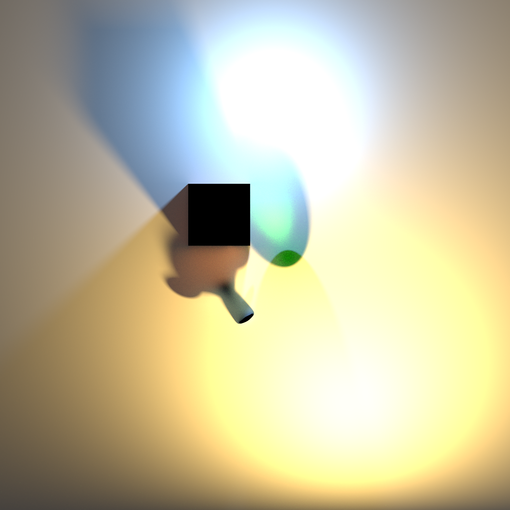
- It is important to know that despite the fact that the texture is visible in the Image Editor, it has not yet been saved. If you close the Blender file now, the texture will be lost. Hence, go to the top menu of the Image Editor and select “Image > Save As…” to save the image.
- Repeat the baking steps for all objects that you prepared for the baking process.